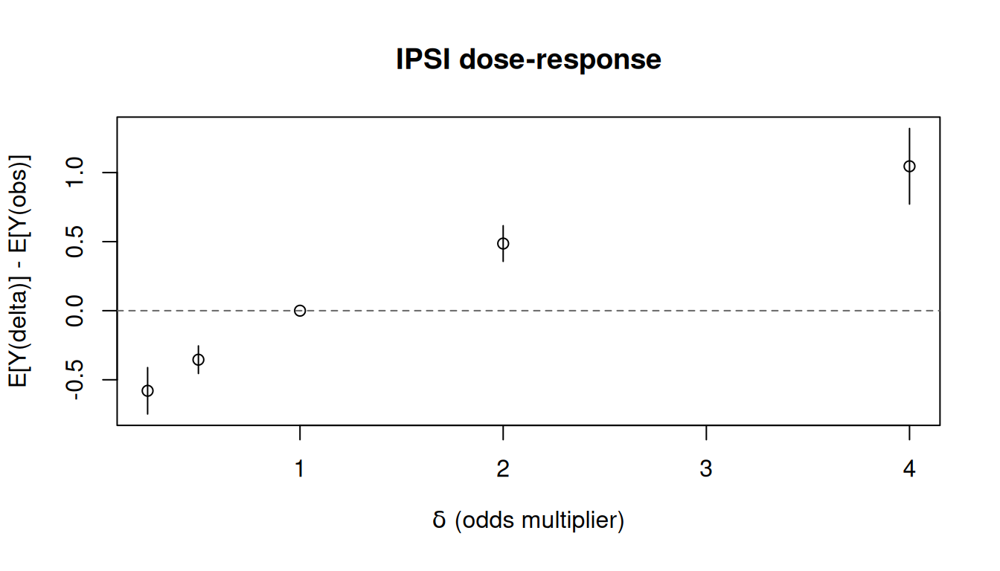

使用 causatr 的逆概率加权
Inverse probability weighting with causatr · causatr 官方文档中译
来源：R 包 causatr 官方文档
ipw.qmd，MIT 许可。 本页是中译，代码与运行结果直接取自原站的渲染输出，未在本站重新执行。 Copyright (c) 2026 causatr authors；许可证全文见原仓库LICENSE.md。
逆概率加权（IPW）通过对观测数据重新加权来估计因果效应，使混杂因子的分布在各 处理组之间达到均衡。causatr 自带一个独立的密度比引擎：它通过用户指定的 propensity_model_fn（默认 stats::glm）拟合条件处理密度，并为每个干预构造 Hájek 权重，用于在 contrast() 内部重新拟合一个仅含截距的边际结构模型（MSM）。
本文用 Hernán 和 Robins (2025) 中的 NHEFS 数据集演示 causatr 里的 IPW，覆盖时间固定处理下 处理类型、结局类型、对比尺度和推断方法的每一种受支持组合。
关于非静态干预（shift、scale、dynamic、IPSI），参见 vignette("interventions")。
注意： IPW 和匹配通过 confounders 中的 A:modifier 项支持效应修饰。 IPW 把每个干预的 MSM 扩展为包含修饰因子主效应（Y ~ 1 + modifier）； 匹配则扩展为饱和 MSM（Y ~ A + modifier + A:modifier）。在 contrast() 中使用 by = "modifier" 可得到各层的估计值。
准备工作
本文的例子使用 NHEFS（National Health and Nutrition Examination Survey —— Epidemiologic Follow-up Study）数据集，它是 Hernán 和 Robins (2025) 全书贯穿的示例。 假定的因果结构是：
- 处理（\(A\)）：
qsmk—— 1971 至 1982 年间是否戒烟（二值：0/1）。 - 结局（\(Y\)）：
wt82_71—— 同一时期的体重变化，单位 kg （连续型）。二值结局部分使用由它派生的二值版本gained_weight（\(\mathbf{1}\{Y > 0\}\)）。 - 混杂因子（\(L\)）： 性别、年龄、种族、受教育程度、吸烟强度 （支/天）、吸烟年数、锻炼、体力活动和基线体重。它们同时影响戒烟概率和 随后的体重变化。
结构因果模型（假定）：
\[ \begin{aligned} L &\sim F_L \\ A &\sim \text{Bernoulli}\!\bigl(\text{logit}^{-1}(\alpha_0 + \alpha_L^\top L)\bigr) \\ Y &= \beta_0 + \beta_A A + \beta_L^\top L + \beta_{AL}^\top (A \cdot L) + \varepsilon, \quad \varepsilon \sim N(0, \sigma^2) \end{aligned} \]
混杂因子 \(L\) 是 \(A\) 和 \(Y\) 的共同原因；对 \(L\) 做调整可阻断所有后门路径， 从而通过 Horvitz–Thompson 重加权估计量识别 \(\mathbb{E}[Y^a]\)。IPW 直接对 处理机制 \(P(A \mid L)\) 建模，并对结局重新加权以消除混杂，而不像 G-computation 那样对 \(E[Y \mid A, L]\) 建模。
library(causatr)
library(tinytable)
library(tinyplot)
data("nhefs")
nhefs_complete <- nhefs[!is.na(nhefs$wt82_71) & !is.na(nhefs$education), ]
nhefs_complete$gained_weight <- as.integer(nhefs_complete$wt82_71 > 0)
nhefs_complete$sex <- factor(
nhefs_complete$sex,
levels = 0:1,
labels = c("Male", "Female")
)二值处理、连续结局
本节复现 Hernán 和 Robins (2025) 第 12 章的 IPW 分析：戒烟（qsmk）对体重变化 （wt82_71）的平均因果效应。默认情况下，confounders 为倾向评分模型指定 同一套协变量。需要时可用 confounders_treatment 为处理模型单独指定另一套 （例如为了 AIPW 的双稳健性）。
ATE 与三明治 SE
fit_ipw <- causat(
nhefs_complete,
outcome = "wt82_71",
treatment = "qsmk",
confounders = ~ sex + age + I(age^2) + race + factor(education) +
smokeintensity + I(smokeintensity^2) + smokeyrs + I(smokeyrs^2) +
factor(exercise) + factor(active) + wt71 + I(wt71^2),
estimator = "ipw",
estimand = "ATE",
model_fn = stats::glm,
propensity_model_fn = stats::glm
)
res_ate_sw <- contrast(
fit_ipw,
interventions = list(quit = static(1), continue = static(0)),
reference = "continue",
type = "difference",
ci_method = "sandwich"
)
res_ate_sw| intervention | estimate | se | ci_lower | ci_upper |
|---|---|---|---|---|
| quit | 5.288 | 0.447 | 4.412 | 6.163 |
| continue | 1.788 | 0.217 | 1.363 | 2.214 |
| comparison | estimate | se | ci_lower | ci_upper |
|---|---|---|---|---|
| quit vs continue | 3.499 | 0.49 | 2.538 | 4.46 |
书中报告的 IPW 估计给出 ATE \(\approx\) 3.4 kg（95% CI：2.4, 4.5）。
ATE 的 bootstrap SE
res_ate_bs <- contrast(
fit_ipw,
interventions = list(quit = static(1), continue = static(0)),
reference = "continue",
type = "difference",
ci_method = "bootstrap",
n_boot = 50L
)
res_ate_bs| intervention | estimate | se | ci_lower | ci_upper |
|---|---|---|---|---|
| quit | 5.288 | 0.414 | 4.582 | 6.071 |
| continue | 1.788 | 0.199 | 1.412 | 2.165 |
| comparison | estimate | se | ci_lower | ci_upper |
|---|---|---|---|---|
| quit vs continue | 3.499 | 0.47 | 2.799 | 4.358 |
ATT 估计目标
对 IPW 而言，估计目标在拟合时就已固定，因为它决定了权重。要估计 ATT，请用 estimand = "ATT" 重新拟合。
fit_ipw_att <- causat(
nhefs_complete,
outcome = "wt82_71",
treatment = "qsmk",
confounders = ~ sex + age + I(age^2) + race + factor(education) +
smokeintensity + I(smokeintensity^2) + smokeyrs + I(smokeyrs^2) +
factor(exercise) + factor(active) + wt71 + I(wt71^2),
estimator = "ipw",
estimand = "ATT",
model_fn = stats::glm,
propensity_model_fn = stats::glm
)
res_att <- contrast(
fit_ipw_att,
interventions = list(quit = static(1), continue = static(0)),
reference = "continue",
type = "difference",
ci_method = "sandwich"
)
res_att| intervention | estimate | se | ci_lower | ci_upper |
|---|---|---|---|---|
| quit | 4.525 | 0.435 | 3.672 | 5.378 |
| continue | 1.222 | 0.296 | 0.642 | 1.803 |
| comparison | estimate | se | ci_lower | ci_upper |
|---|---|---|---|---|
| quit vs continue | 3.303 | 0.498 | 2.326 | 4.28 |
ATC 估计目标
fit_ipw_atc <- causat(
nhefs_complete,
outcome = "wt82_71",
treatment = "qsmk",
confounders = ~ sex + age + I(age^2) + race + factor(education) +
smokeintensity + I(smokeintensity^2) + smokeyrs + I(smokeyrs^2) +
factor(exercise) + factor(active) + wt71 + I(wt71^2),
estimator = "ipw",
estimand = "ATC",
model_fn = stats::glm,
propensity_model_fn = stats::glm
)
res_atc <- contrast(
fit_ipw_atc,
interventions = list(quit = static(1), continue = static(0)),
reference = "continue",
type = "difference",
ci_method = "sandwich"
)
res_atc| intervention | estimate | se | ci_lower | ci_upper |
|---|---|---|---|---|
| quit | 5.554 | 0.489 | 4.596 | 6.511 |
| continue | 1.984 | 0.218 | 1.557 | 2.412 |
| comparison | estimate | se | ci_lower | ci_upper |
|---|---|---|---|---|
| quit vs continue | 3.569 | 0.528 | 2.534 | 4.604 |
ATT 的 bootstrap SE
res_att_bs <- contrast(
fit_ipw_att,
interventions = list(quit = static(1), continue = static(0)),
reference = "continue",
type = "difference",
ci_method = "bootstrap",
n_boot = 50L
)
res_att_bs| intervention | estimate | se | ci_lower | ci_upper |
|---|---|---|---|---|
| quit | 4.525 | 0.391 | 3.752 | 5.23 |
| continue | 1.222 | 0.235 | 0.79 | 1.616 |
| comparison | estimate | se | ci_lower | ci_upper |
|---|---|---|---|---|
| quit vs continue | 3.303 | 0.472 | 2.362 | 4.175 |
以编程方式提取结果
coef(res_ate_sw)
#> quit continue
#> 5.287648 1.788473
confint(res_ate_sw)
#> lower upper
#> quit 4.412464 6.162831
#> continue 1.362560 2.214387
vcov(res_ate_sw)
#> quit continue
#> quit 0.199389310 0.003155553
#> continue 0.003155553 0.047222294
tidy(res_ate_sw)
#> term estimate std.error type conf.low conf.high
#> 1 quit vs continue 3.499174 0.4902045 contrast 2.538391 4.459958
glance(res_ate_sw)
#> estimator estimand contrast_type ci_method n n_interventions
#> 1 ipw ATE difference sandwich 1566 2二值处理、二值结局
这里用 gained_weight 指示变量作为二值结局。IPW 引擎对每个干预重新拟合一个 仅含截距的加权 MSM；contrast() 计算边际风险，并通过统一的影响函数方差引擎 （variance_if()）导出对比，该引擎对 IPW 使用 compute_ipw_if_self_contained_one()，在堆叠的倾向评分 + MSM M-估计方程组上 构建个体水平的 IF。
风险差（三明治）
fit_ipw_bin <- causat(
nhefs_complete,
outcome = "gained_weight",
treatment = "qsmk",
confounders = ~ sex + age + I(age^2) + race + factor(education) +
smokeintensity + I(smokeintensity^2) + smokeyrs + I(smokeyrs^2) +
factor(exercise) + factor(active) + wt71 + I(wt71^2),
estimator = "ipw",
model_fn = stats::glm,
propensity_model_fn = stats::glm
)
res_rd <- contrast(
fit_ipw_bin,
interventions = list(quit = static(1), continue = static(0)),
reference = "continue",
type = "difference",
ci_method = "sandwich"
)
res_rd| intervention | estimate | se | ci_lower | ci_upper |
|---|---|---|---|---|
| quit | 0.776 | 0.021 | 0.735 | 0.818 |
| continue | 0.639 | 0.014 | 0.611 | 0.666 |
| comparison | estimate | se | ci_lower | ci_upper |
|---|---|---|---|---|
| quit vs continue | 0.138 | 0.025 | 0.089 | 0.187 |
风险差（bootstrap）
res_rd_bs <- contrast(
fit_ipw_bin,
interventions = list(quit = static(1), continue = static(0)),
reference = "continue",
type = "difference",
ci_method = "bootstrap",
n_boot = 50L
)
res_rd_bs| intervention | estimate | se | ci_lower | ci_upper |
|---|---|---|---|---|
| quit | 0.776 | 0.022 | 0.741 | 0.812 |
| continue | 0.639 | 0.014 | 0.616 | 0.669 |
| comparison | estimate | se | ci_lower | ci_upper |
|---|---|---|---|---|
| quit vs continue | 0.138 | 0.028 | 0.09 | 0.192 |
风险比
res_rr <- contrast(
fit_ipw_bin,
interventions = list(quit = static(1), continue = static(0)),
reference = "continue",
type = "ratio",
ci_method = "sandwich"
)
res_rr| intervention | estimate | se | ci_lower | ci_upper |
|---|---|---|---|---|
| quit | 0.776 | 0.021 | 0.735 | 0.818 |
| continue | 0.639 | 0.014 | 0.611 | 0.666 |
| comparison | estimate | se | ci_lower | ci_upper |
|---|---|---|---|---|
| quit vs continue | 1.216 | 0.042 | 1.137 | 1.301 |
比值比
res_or <- contrast(
fit_ipw_bin,
interventions = list(quit = static(1), continue = static(0)),
reference = "continue",
type = "or",
ci_method = "sandwich"
)
res_or| intervention | estimate | se | ci_lower | ci_upper |
|---|---|---|---|---|
| quit | 0.776 | 0.021 | 0.735 | 0.818 |
| continue | 0.639 | 0.014 | 0.611 | 0.666 |
| comparison | estimate | se | ci_lower | ci_upper |
|---|---|---|---|---|
| quit vs continue | 1.967 | 0.264 | 1.511 | 2.559 |
风险比（bootstrap）
res_rr_bs <- contrast(
fit_ipw_bin,
interventions = list(quit = static(1), continue = static(0)),
reference = "continue",
type = "ratio",
ci_method = "bootstrap",
n_boot = 50L
)
res_rr_bs| intervention | estimate | se | ci_lower | ci_upper |
|---|---|---|---|---|
| quit | 0.776 | 0.022 | 0.724 | 0.807 |
| continue | 0.639 | 0.014 | 0.612 | 0.663 |
| comparison | estimate | se | ci_lower | ci_upper |
|---|---|---|---|---|
| quit vs continue | 1.216 | 0.046 | 1.123 | 1.29 |
并行 bootstrap
只要把 parallel 和 ncpus 直接透传给 boot::boot()，bootstrap 重抽样就可以并行执行：
res_par <- contrast(
fit_ipw,
interventions = list(quit = static(1), continue = static(0)),
reference = "continue",
ci_method = "bootstrap",
n_boot = 200L,
parallel = "multicore", # or "snow" on Windows
ncpus = 4L
)这两个参数默认取 getOption("boot.parallel", "no") 和 getOption("boot.ncpus", 1L)，因此在会话级设置 options(boot.parallel = "multicore", boot.ncpus = 4L)，就能让每一次 contrast() 调用都开启并行，而不必逐次传参。
动态干预（二值处理）
dynamic() 干预会根据每个个体的协变量，为其分配一个处理值。在 IPW 下， 二值处理上的动态规则使用 Horwitz–Thompson 指示权重：\(w_i = \mathbb{1}\{A_i = d(L_i)\} / f(d(L_i) \mid L_i)\)。
rule <- function(data, trt) {
ifelse(data$smokeintensity > 20, 1L, 0L)
}
res_dyn <- contrast(
fit_ipw,
interventions = list(
targeted = dynamic(rule),
all_quit = static(1)
),
reference = "all_quit",
type = "difference"
)
res_dyn| intervention | estimate | se | ci_lower | ci_upper |
|---|---|---|---|---|
| targeted | 2.803 | 0.355 | 2.107 | 3.499 |
| all_quit | 5.288 | 0.447 | 4.412 | 6.163 |
| comparison | estimate | se | ci_lower | ci_upper |
|---|---|---|---|---|
| targeted vs all_quit | -2.485 | 0.385 | -3.239 | -1.73 |
重度吸烟者（每天 > 20 支）被分配去戒烟，其余人保持不处理。与 static(1)（全体戒烟）的对比告诉我们，只针对重度吸烟者会损失多少效果。
tt(tidy(res_dyn), digits = 3)| term | estimate | std.error | type | conf.low | conf.high |
|---|---|---|---|---|---|
| targeted vs all_quit | -2.48 | 0.385 | contrast | -3.24 | -1.73 |
IPSI — 增量倾向评分干预
ipsi(delta) 把每个个体接受处理的优势（odds）乘以 delta (Kennedy 2019)。 它是一种平滑的随机化干预，可以避免违反正值性 — 没有人会被强行推到一个 他本来绝不会取到的处理值上。
res_ipsi <- contrast(
fit_ipw,
interventions = list(
double_odds = ipsi(2),
observed = NULL
),
reference = "observed",
type = "difference"
)
res_ipsi| intervention | estimate | se | ci_lower | ci_upper |
|---|---|---|---|---|
| double_odds | 3.125 | 0.218 | 2.697 | 3.552 |
| observed | 2.638 | 0.199 | 2.248 | 3.028 |
| comparison | estimate | se | ci_lower | ci_upper |
|---|---|---|---|---|
| double_odds vs observed | 0.486 | 0.066 | 0.357 | 0.615 |
改变 delta 会勾勒出一条剂量–反应曲线：
deltas <- c(0.25, 0.5, 1, 2, 4)
ipsi_results <- lapply(deltas, function(d) {
r <- contrast(
fit_ipw,
interventions = list(ipsi = ipsi(d), obs = NULL),
reference = "obs",
type = "difference"
)
data.frame(
delta = d,
estimate = r$contrasts$estimate[1],
ci_lower = r$contrasts$ci_lower[1],
ci_upper = r$contrasts$ci_upper[1]
)
})
ipsi_df <- do.call(rbind, ipsi_results)
tinyplot(
estimate ~ delta,
data = ipsi_df,
type = "pointrange",
ymin = ipsi_df$ci_lower,
ymax = ipsi_df$ci_upper,
xlab = expression(delta ~ "(odds multiplier)"),
ylab = "E[Y(delta)] - E[Y(obs)]",
main = "IPSI dose-response"
)
abline(h = 0, lty = 2, col = "grey40")
在 delta = 1 时，该干预与自然进程相同，因此对比为零。小于 1 的取值会降低 接受处理的优势，大于 1 的取值则会提高它。
分类处理（k > 2 个水平）
当处理是因子列或字符列时，密度比引擎会自动选用多项倾向评分模型（通过 nnet::multinom）。每个干预对应的 MSM 只含截距项，因此 contrast() 可以 相对用户指定的参照水平计算任意两两差值。
DGM. 单个混杂因子 \(L\) 同时影响三水平分类处理 \(A \in \{A, B, C\}\) 和结局 \(Y\)。处理分配服从以类别 A 为参照水平的 softmax（多项 logistic）模型。结局 关于处理指示变量和 \(L\) 是线性的。
\[ \begin{aligned} L &\sim N(0, 1) \\ P(A = k \mid L) &= \frac{\exp(\gamma_k L)}{\sum_{j} \exp(\gamma_j L)}, \quad \gamma_A = 0,\; \gamma_B = 0.5,\; \gamma_C = -0.3 \\ Y &= 2 + 1.5 \cdot \mathbf{1}\{A = B\} - 0.8 \cdot \mathbf{1}\{A = C\} + 0.5\, L + \varepsilon, \quad \varepsilon \sim N(0, 1) \end{aligned} \]
真实对比（相对参照 A）：\(\mathbb{E}[Y^B] - \mathbb{E}[Y^A] = 1.5\)， \(\mathbb{E}[Y^C] - \mathbb{E}[Y^A] = -0.8\)。
set.seed(42)
n <- 2000
L <- rnorm(n)
probs <- exp(cbind(0, 0.5 * L, -0.3 * L))
probs <- probs / rowSums(probs)
A <- factor(
apply(probs, 1, function(p) sample(c("A", "B", "C"), 1, prob = p)),
levels = c("A", "B", "C")
)
Y <- 2 + (A == "B") * 1.5 + (A == "C") * -0.8 + 0.5 * L + rnorm(n)
cat_df <- data.frame(Y = Y, A = A, L = L)
fit_ipw_cat <- causat(
cat_df,
outcome = "Y",
treatment = "A",
confounders = ~ L,
estimator = "ipw",
model_fn = stats::glm,
propensity_model_fn = nnet::multinom
)
res_ipw_cat <- contrast(
fit_ipw_cat,
interventions = list(
arm_a = static("A"),
arm_b = static("B"),
arm_c = static("C")
),
reference = "arm_a",
type = "difference"
)
res_ipw_cat| intervention | estimate | se | ci_lower | ci_upper |
|---|---|---|---|---|
| arm_a | 1.99 | 0.041 | 1.91 | 2.07 |
| arm_b | 3.451 | 0.046 | 3.361 | 3.54 |
| arm_c | 1.141 | 0.042 | 1.058 | 1.223 |
| comparison | estimate | se | ci_lower | ci_upper |
|---|---|---|---|---|
| arm_b vs arm_a | 1.461 | 0.06 | 1.344 | 1.577 |
| arm_c vs arm_a | -0.85 | 0.057 | -0.961 | -0.738 |
连续处理（shift / scale MTPs）
对连续处理，引擎拟合一个高斯处理密度模型，并对修正处理策略（MTP）使用密度比 权重。连续处理上的 static() 干预会被拒绝（没有个体恰好被观测到等于目标值， 因此 HT 指示变量几乎必然为零）。请改用 shift() 或 scale_by()：
DGM. 单个混杂因子 \(L\) 同时驱动一个连续（高斯）处理 \(A\) 和一个连续结局 \(Y\)。处理密度为 \(A \mid L \sim N(1 + 0.5\, L,\; 1)\)，结局对 \(A\) 和 \(L\) 线性并带加性噪声。
\[ \begin{aligned} L &\sim N(0, 1) \\ A \mid L &\sim N(1 + 0.5\, L,\; 1) \\ Y &= 1 + 2\, A + L + \varepsilon, \quad \varepsilon \sim N(0, 1) \end{aligned} \]
因为 \(\partial Y / \partial A = 2\)，单位加性平移 \(A \mapsto A + 1\) 的真实因果效应为 \(\mathbb{E}[Y(A + 1)] - \mathbb{E}[Y(A)] = 2\)。
set.seed(5)
n <- 2000
L <- rnorm(n)
A <- 1 + 0.5 * L + rnorm(n)
Y <- 1 + 2 * A + L + rnorm(n)
cont_df <- data.frame(Y = Y, A = A, L = L)
fit_ipw_cont <- causat(
cont_df,
outcome = "Y",
treatment = "A",
confounders = ~ L,
estimator = "ipw",
model_fn = stats::glm,
propensity_model_fn = stats::glm
)
res_shift <- contrast(
fit_ipw_cont,
interventions = list(up1 = shift(1), observed = NULL),
reference = "observed",
type = "difference"
)
res_shift
res_scale <- contrast(
fit_ipw_cont,
interventions = list(doubled = scale_by(2), observed = NULL),
reference = "observed",
type = "difference"
)
res_scale结构真值：E[Y(A+1)] - E[Y(A)] = 2（即 A 的系数）。
shift、scale、dynamic 和 IPSI 干预的完整介绍见 vignette("interventions")， 其中给出了 G-computation 与 IPW 的并列示例。
计数处理（泊松 / 负二项）
整数取值的处理——剂量水平、事件计数、就诊次数——默认使用高斯处理密度；当支撑 足够稠密、正态近似无害时（以年为单位的年龄、每天吸烟支数），这样做没有问题。 对稀疏的计数数据（0–5 个剂量），高斯 pdf 会在概率为零的整数之间取值，产生 标定很差的密度比。
传入 propensity_family = "poisson" 或 propensity_family = "negbin"，即可 启用泊松或负二项处理密度模型：
DGM. 混杂因子 \(L\) 同时影响一个服从泊松分布的计数处理 \(A\) 和一个连续结局 \(Y\)。处理由对数线性泊松模型生成，结局对 \(A\) 和 \(L\) 线性。
\[ \begin{aligned} L &\sim N(0, 1) \\ A \mid L &\sim \text{Poisson}\!\bigl(\exp(0.5\, L)\bigr) \\ Y &= 2 + 1.5\, A + L + \varepsilon, \quad \varepsilon \sim N(0, 1) \end{aligned} \]
因为 \(\partial Y / \partial A = 1.5\)，单位平移 \(A \mapsto A + 1\) 的真实因果效应为 \(\mathbb{E}[Y(A + 1)] - \mathbb{E}[Y(A)] = 1.5\)。
set.seed(6)
n <- 3000
L <- rnorm(n)
A <- rpois(n, exp(0.5 * L))
Y <- 2 + 1.5 * A + L + rnorm(n)
count_df <- data.frame(Y = Y, A = A, L = L)
fit_pois <- causat(
count_df,
outcome = "Y",
treatment = "A",
confounders = ~ L,
estimator = "ipw",
propensity_family = "poisson",
model_fn = stats::glm,
propensity_model_fn = stats::glm
)
res_pois <- contrast(
fit_pois,
interventions = list(plus1 = shift(1), observed = NULL),
reference = "observed",
type = "difference"
)
res_pois| intervention | estimate | se | ci_lower | ci_upper |
|---|---|---|---|---|
| plus1 | 5.267 | 0.069 | 5.133 | 5.402 |
| observed | 3.692 | 0.049 | 3.595 | 3.788 |
| comparison | estimate | se | ci_lower | ci_upper |
|---|---|---|---|---|
| plus1 vs observed | 1.576 | 0.05 | 1.478 | 1.674 |
结构真值：E[Y(A+1)] - E[Y(A)] = 1.5。
对负二项（theta 很大时它退化为泊松），传入 propensity_family = "negbin"。MASS::glm.nb 会被自动选为倾向评分拟合函数：
fit_nb <- causat(
count_df,
outcome = "Y",
treatment = "A",
confounders = ~ L,
estimator = "ipw",
propensity_family = "negbin",
model_fn = stats::glm,
propensity_model_fn = MASS::glm.nb
)
#> Warning in theta.ml(Y, mu, sum(w), w, limit = control$maxit, trace =
#> control$trace > : iteration limit reached
#> Warning in theta.ml(Y, mu, sum(w), w, limit = control$maxit, trace =
#> control$trace > : iteration limit reached
res_nb <- contrast(
fit_nb,
interventions = list(plus1 = shift(1), observed = NULL),
reference = "observed",
type = "difference"
)
res_nb| intervention | estimate | se | ci_lower | ci_upper |
|---|---|---|---|---|
| plus1 | 5.261 | 0.068 | 5.127 | 5.395 |
| observed | 3.692 | 0.049 | 3.595 | 3.788 |
| comparison | estimate | se | ci_lower | ci_upper |
|---|---|---|---|---|
| plus1 vs observed | 1.57 | 0.05 | 1.472 | 1.667 |
scale_by() 同样适用于计数处理，但约束更严：密度比在 A / factor 处取值， 因此 每一个 观测值的 A / factor 都必须是非负整数。实际上这意味着，只有当 所有观测到的计数都是该因子的倍数时，对计数使用 scale_by() 才可行。
只允许使用整数 delta 的 shift()，以及对每个观测 A / factor 均为整数的 scale_by()。static()、dynamic()、threshold() 和 ipsi() 会被拒绝， 因为计数分布的 pmf 在非整数取值处为零，而 HT 指示量 / IPSI 闭式表达要求二值 结构。对计数数据使用这些干预类型时，请改用 estimator = "gcomp"。
GAM 倾向评分模型
传入 propensity_model_fn = mgcv::gam，即可在处理密度模型上使用 GAM，同时 结局 MSM 仍保留默认的 stats::glm：
fit_gam_ps <- causat(
nhefs_complete,
outcome = "wt82_71",
treatment = "qsmk",
confounders = ~ sex + s(age) + race + factor(education) +
s(smokeintensity) + s(smokeyrs) + factor(exercise) +
factor(active) + s(wt71),
estimator = "ipw",
model_fn = stats::glm,
propensity_model_fn = mgcv::gam
)
res_gam_ps <- contrast(
fit_gam_ps,
interventions = list(quit = static(1), continue = static(0)),
reference = "continue",
type = "difference"
)
res_gam_ps| intervention | estimate | se | ci_lower | ci_upper |
|---|---|---|---|---|
| quit | 5.308 | 0.44 | 4.446 | 6.17 |
| continue | 1.811 | 0.216 | 1.387 | 2.234 |
| comparison | estimate | se | ci_lower | ci_upper |
|---|---|---|---|---|
| quit vs continue | 3.497 | 0.482 | 2.553 | 4.441 |
外部（调查）权重
预先算好的调查权重通过 weights = 传入；causatr 会用 check_weights() 校验 它们，并与估计得到的密度比权重按元素相乘。合并后的权重同时驱动各干预的 MSM 拟合和影响函数三明治方差。
DGM。 一个受混杂的简单二值处理，配连续结局。附加了随机的调查权重（与数据 生成过程无关），用于演示外部权重的处理方式。
\[ \begin{aligned} L &\sim N(0, 1) \\ A \mid L &\sim \text{Bernoulli}\!\bigl(\text{logit}^{-1}(0.5\, L)\bigr) \\ Y &= 2 + 3\, A + 1.5\, L + \varepsilon, \quad \varepsilon \sim N(0, 1) \\ w_i &\stackrel{\text{iid}}{\sim} \text{Uniform}(0.5,\; 2.0) \end{aligned} \]
真实 ATE：\(\mathbb{E}[Y^1] - \mathbb{E}[Y^0] = 3\)。
set.seed(6)
n <- 2000
L <- rnorm(n)
A <- rbinom(n, 1, plogis(0.5 * L))
Y <- 2 + 3 * A + 1.5 * L + rnorm(n)
w <- runif(n, 0.5, 2.0)
sv_df <- data.frame(Y = Y, A = A, L = L)
fit_ipw_sv <- causat(
sv_df,
outcome = "Y",
treatment = "A",
confounders = ~ L,
estimator = "ipw",
weights = w,
model_fn = stats::glm,
propensity_model_fn = stats::glm
)
res_ipw_sv <- contrast(
fit_ipw_sv,
interventions = list(a1 = static(1), a0 = static(0)),
reference = "a0",
type = "difference"
)
res_ipw_sv| intervention | estimate | se | ci_lower | ci_upper |
|---|---|---|---|---|
| a1 | 5.079 | 0.051 | 4.979 | 5.18 |
| a0 | 1.928 | 0.051 | 1.829 | 2.028 |
| comparison | estimate | se | ci_lower | ci_upper |
|---|---|---|---|---|
| a1 vs a0 | 3.151 | 0.049 | 3.054 | 3.248 |
直接集成 survey::svydesign
causat(weights = ...) 也可以直接接受 survey::svydesign 对象——用 stats::weights(design) 提取抽样权重，并自动采用该设计的第一阶段 PSU 作为 对比阶段的聚类（见下文）。显式指定 cluster = 会覆盖这一自动采用；单 PSU 设计（svydesign(ids = ~1, ...)）只传递权重。
library(survey)
des <- svydesign(ids = ~psu, weights = ~pw, data = d)
fit <- causat(d, outcome = "Y", treatment = "A",
confounders = ~ L, estimator = "ipw",
weights = des,
model_fn = stats::glm, propensity_model_fn = stats::glm)聚类稳健三明治方差
对于设计聚类（中心、家庭、PSU、重复测量），IPW 三明治方差应当考虑个体 IF 在 聚类内部的共同变动。causat(cluster = "col") 让该列经 prepare_data() 保留 下来并存放在拟合对象上；contrast() 默认采用该聚类，执行“先在聚类内求和、 再平方”的 IF 汇总。除通常的 \(G/(G-1)\) 小聚类因子外，它在数值上等价于对最终的 MSM 拟合 → 预测再平均这一步调用 sandwich::vcovCL(type = "HC0")。
fit_cl <- causat(d, outcome = "Y", treatment = "A",
confounders = ~ L, estimator = "ipw",
cluster = "site",
model_fn = stats::glm, propensity_model_fn = stats::glm)
contrast(fit_cl, list(a1 = static(1), a0 = static(0)))比较不同估计目标
est_df <- data.frame(
estimand = c("ATE", "ATT", "ATC"),
estimate = c(
res_ate_sw$contrasts$estimate[1],
res_att$contrasts$estimate[1],
res_atc$contrasts$estimate[1]
),
ci_lower = c(
res_ate_sw$contrasts$ci_lower[1],
res_att$contrasts$ci_lower[1],
res_atc$contrasts$ci_lower[1]
),
ci_upper = c(
res_ate_sw$contrasts$ci_upper[1],
res_att$contrasts$ci_upper[1],
res_atc$contrasts$ci_upper[1]
)
)
tinyplot(
estimate ~ estimand,
data = est_df,
type = "pointrange",
ymin = est_df$ci_lower,
ymax = est_df$ci_upper,
xlab = "Estimand",
ylab = "Effect on weight change (kg)",
main = "IPW estimates by estimand"
)
abline(h = 0, lty = 2, col = "grey40")
用 by 分析效应修饰
当 confounders 中包含 A:modifier 交互项时，IPW 会把逐干预的 MSM 从 Y ~ 1 扩展为 Y ~ 1 + modifier。修饰变量的主效应让 predict() 能返回 各层的反事实均值；处理本身仍由密度比权重吸收。在 contrast() 中使用 by = "modifier" 即可得到异质处理效应。
这里我们加入 qsmk:sex 交互项，考察戒烟对体重变化的效应如何因性别而异。 倾向评分模型会自动剔除该交互项（它只进入 MSM，不进入处理模型）。
fit_ipw_hte <- causat(
nhefs_complete,
outcome = "wt82_71",
treatment = "qsmk",
confounders = ~ sex + age + I(age^2) + race + factor(education) +
smokeintensity + I(smokeintensity^2) + smokeyrs + I(smokeyrs^2) +
factor(exercise) + factor(active) + wt71 + I(wt71^2) +
qsmk:sex,
estimator = "ipw",
model_fn = stats::glm,
propensity_model_fn = stats::glm
)
res_ipw_by_sex <- contrast(
fit_ipw_hte,
interventions = list(quit = static(1), continue = static(0)),
reference = "continue",
type = "difference",
ci_method = "sandwich",
by = "sex"
)
res_ipw_by_sex| intervention | estimate | se | ci_lower | ci_upper | by | n_by |
|---|---|---|---|---|---|---|
| quit | 5.367 | 0.562 | 4.266 | 6.468 | Male | 762 |
| continue | 1.798 | 0.302 | 1.206 | 2.389 | Male | 762 |
| quit | 5.21 | 0.717 | 3.805 | 6.615 | Female | 804 |
| continue | 1.78 | 0.32 | 1.153 | 2.406 | Female | 804 |
| comparison | estimate | se | ci_lower | ci_upper | by | n_by |
|---|---|---|---|---|---|---|
| quit vs continue | 3.569 | 0.633 | 2.328 | 4.81 | Male | 762 |
| quit vs continue | 3.43 | 0.777 | 1.907 | 4.953 | Female | 804 |
A:modifier 项不会进入倾向评分模型 — 否则会造成处理后变量的问题。 build_ps_formula() 会自动剔除涉及处理的交互项。修饰变量只作为主效应 进入逐干预的 MSM，从而可以在密度比权重下估计各层的反事实均值。
Tidy 与 glance
causatr 的结果可以通过 tidy() 和 glance() 接入 broom 生态：
tidy(res_ate_sw)
#> term estimate std.error type conf.low conf.high
#> 1 quit vs continue 3.499174 0.4902045 contrast 2.538391 4.459958
glance(res_ate_sw)
#> estimator estimand contrast_type ci_method n n_interventions
#> 1 ipw ATE difference sandwich 1566 2森林图
plot() 方法使用 forrest 包绘制森林图。
plot(res_ate_sw)
诊断
拟合 IPW 模型后，用 diagnose() 评估正值性和协变量均衡。均衡诊断使用 cobalt 计算加权前后的标准化均数差 （SMD）。
diag <- diagnose(fit_ipw)
#> Note: `s.d.denom` not specified; assuming "pooled".
diag
#> <causatr_diag>
#> Estimator:ipw
#> Treatment: binary
#> Estimand: ATE
#>
#> Positivity:
#> statistic value
#> <char> <num>
#> min 2.667709e-07
#> q25 1.739280e-01
#> median 2.356540e-01
#> q75 3.232473e-01
#> max 8.723380e-01
#> n_below_lower 6.000000e+00
#> n_above_upper 0.000000e+00
#> n_violations 6.000000e+00
#> pct_violations 3.800000e-01
#>
#> Covariate balance:
#> Balance Measures
#> Type Diff.Un M.Threshold.Un V.Ratio.Un
#> sex_Female Binary -0.1603 Not Balanced, >0.1 .
#> age Contin. 0.2820 Not Balanced, >0.1 1.0731
#> I(age^2) Contin. 0.2816 Not Balanced, >0.1 1.1632
#> race Binary -0.1771 Not Balanced, >0.1 .
#> factor(education)_0 Binary 0.0439 Balanced, <0.1 .
#> factor(education)_1 Binary -0.1018 Not Balanced, >0.1 .
#> factor(education)_2 Binary 0.0797 Balanced, <0.1 .
#> factor(education)_3 Binary 0.0234 Balanced, <0.1 .
#> factor(education)_4 Binary -0.0129 Balanced, <0.1 .
#> factor(education)_5 Binary -0.0615 Balanced, <0.1 .
#> factor(education)_6 Binary 0.0496 Balanced, <0.1 .
#> factor(education)_7 Binary 0.0025 Balanced, <0.1 .
#> factor(education)_8 Binary 0.0397 Balanced, <0.1 .
#> factor(education)_9 Binary 0.0173 Balanced, <0.1 .
#> factor(education)_10 Binary -0.0826 Balanced, <0.1 .
#> factor(education)_11 Binary -0.1044 Not Balanced, >0.1 .
#> factor(education)_12 Binary -0.0472 Balanced, <0.1 .
#> factor(education)_13 Binary 0.0089 Balanced, <0.1 .
#> factor(education)_15 Binary -0.0665 Balanced, <0.1 .
#> factor(education)_16 Binary 0.1354 Not Balanced, >0.1 .
#> factor(education)_17 Binary 0.0890 Balanced, <0.1 .
#> smokeintensity Contin. -0.2167 Not Balanced, >0.1 1.1679
#> I(smokeintensity^2) Contin. -0.1289 Not Balanced, >0.1 1.1519
#> smokeyrs Contin. 0.1589 Not Balanced, >0.1 1.1846
#> I(smokeyrs^2) Contin. 0.1789 Not Balanced, >0.1 1.3279
#> factor(exercise)_0 Binary -0.1237 Not Balanced, >0.1 .
#> factor(exercise)_1 Binary 0.0398 Balanced, <0.1 .
#> factor(exercise)_2 Binary 0.0568 Balanced, <0.1 .
#> factor(active)_0 Binary -0.0718 Balanced, <0.1 .
#> factor(active)_1 Binary 0.0268 Balanced, <0.1 .
#> factor(active)_2 Binary 0.0740 Balanced, <0.1 .
#> wt71 Contin. 0.1332 Not Balanced, >0.1 1.0606
#> I(wt71^2) Contin. 0.1272 Not Balanced, >0.1 1.0876
#>
#> Balance tally for mean differences
#> count
#> Balanced, <0.1 19
#> Not Balanced, >0.1 14
#>
#> Variable with the greatest mean difference
#> Variable Diff.Un M.Threshold.Un
#> age 0.282 Not Balanced, >0.1
#>
#> Sample sizes
#> Control Treated
#> All 1163 403
#>
#> Weight distribution:
#> group n mean sd min max ess
#> <char> <int> <num> <num> <num> <num> <num>
#> treated 403 3.867604 2.0214552 1.146345 18.317409 316.6996
#> control 1163 1.346257 0.2502549 1.000000 3.517515 1124.1873
#> overall 1566 1.995110 1.5204893 1.000000 18.317409 990.8646Love 图
Love 图用于可视化协变量均衡。SMD 绝对值低于阈值（虚线位于 0.1）的协变量 被认为均衡良好。
plot(diag)
#> Note: `s.d.denom` not specified; assuming "pooled".
权重分布
极端权重会放大方差。权重摘要给出有效样本量（ESS）— 相对名义样本量大幅 下降提示存在影响较大的权重。
diag$weights
#> group n mean sd min max ess
#> <char> <int> <num> <num> <num> <num> <num>
#> 1: treated 403 3.867604 2.0214552 1.146345 18.317409 316.6996
#> 2: control 1163 1.346257 0.2502549 1.000000 3.517515 1124.1873
#> 3: overall 1566 1.995110 1.5204893 1.000000 18.317409 990.8646权重截断
当倾向评分模型给出极端的密度比时——可能源于接近违背正值性、严重混杂，或是跨多个分量、 多个时间点的累积乘积——由此得到的 IPW 估计量会不稳定，方差被放大。contrast() 的 trim 参数按给定分位数对密度比权重做缩尾（winsorize）处理 (Cole 和 Hernán 2008; Spreafico 2025)。这是一个逐密度比的操作，在任何多元 或纵向乘积之前执行，沿用 lmtp 内部采用 的做法（默认 0.999）。
# Without truncation
res_raw <- contrast(
fit_ipw, interventions = list(a1 = static(1), a0 = static(0)),
ci_method = "sandwich"
)
# With truncation at the 99.9th percentile of the density ratio
res_trim <- contrast(
fit_ipw, interventions = list(a1 = static(1), a0 = static(0)),
ci_method = "sandwich", trim = 0.999
)data.frame(
Truncation = c("None (trim = 1)", "trim = 0.999"),
Estimate = c(res_raw$contrasts$estimate, res_trim$contrasts$estimate),
SE = c(res_raw$contrasts$se, res_trim$contrasts$se)
) |>
tinytable::tt(digits = 4) |>
tinytable::format_tt(j = 2:3, digits = 3)截断把每个密度比裁剪到它的第 trim 分位数处（只截上尾）。关键的设计取舍：
- 逐分量、在乘积之前： 对多元 IPW，\(K\) 个逐分量密度比各自在 \(\prod_k\) 乘积之前 被截断。对纵向 IPW，逐时间点的密度比在累积 \(\prod_t\) 乘积之前被截断。
- 不适用于抽样权重（迁移）或 IPCW 权重（删失）——这些权重定义的是目标人群， 而不是因果重加权。
- 三明治 SE 反映的是截断后的权重：阈值固定在点估计值处，因此
numDeriv的扰动 是在截断后的权重曲面上计算 IF。 - bootstrap 在每次重抽样上重新计算截断阈值，从而捕捉包含截断效应在内的全部方差。
默认的 trim = 1 不做任何截断，复现标准的 IPW 估计量。
多元（联合）处理
estimator = "ipw" 接受多个处理列 treatment = c("A1", "A2", ...)。引擎通过链式法则 把联合条件密度分解为
\[f(A_1, \ldots, A_K \mid L) = \prod_{k=1}^{K} f_k(A_k \mid A_{1..k-1}, L)\]
并为每个分量拟合一个单变量密度模型（序贯分解）。联合密度比权重是 \(K\) 个逐分量密度比 的乘积，其中第 \(k\) 个因子的分子和分母都以观测到的上游处理值为条件——只有第 \(k\) 个 自变量（\(A_k\) 对 \(d_k^{-1}(A_k)\)）发生变化：
\[w_k(\alpha_k) = \frac{f_k\bigl(d_k^{-1}(A_k) \mid A_{1..k-1}^{\mathrm{obs}}, L; \alpha_k\bigr) \cdot |\mathrm{Jac}|}{f_k\bigl(A_k \mid A_{1..k-1}^{\mathrm{obs}}, L; \alpha_k\bigr)}.\]
这就是 Díaz 等 (2023) 给出的序贯 MTP 估计目标，也是因果推断 MTP 文献中的标准做法。 三明治方差经由一个堆叠的倾向评分 bread 计算，该矩阵在 \(K\) 个模型之间是分块对角的 （每个分量都独立拟合），因此倾向评分修正项就是 \(K\) 个单模型修正项之和。
多元 G-computation 实现的是另一个估计目标。 多元 G-computation 计算的是 \(E[Y^d] = E\bigl\{E[Y \mid A_1 = d_1(A_1^{\mathrm{obs}}), A_2 = d_2(A_2^{\mathrm{obs}}), L]\bigr\}\) 即在确定性联合变换之下：每个个体的反事实是 \((d_1(A_1^{\mathrm{obs}}), d_2(A_2^{\mathrm{obs}}))\)，对每个个体同时施加。 对只含静态干预的情形，它与序贯 MTP 估计目标一致；而对非最终分量上的非静态 干预，两者可能因上游 \(\to\) 下游的交叉依赖而出现差异。需要在非静态多元策略上 做 G-computation 与 IPW 三角验证的用户，应当注意这一估计目标上的分歧。
干预以命名列表的形式给出，每个处理列对应一个条目，每个条目都是一个 causatr_intervention：
set.seed(42)
n <- 3000
L <- rnorm(n)
A1 <- rbinom(n, 1, plogis(0.3 * L))
A2 <- rbinom(n, 1, plogis(-0.3 * L))
Y <- 2 + 1.5 * A1 + 1.0 * A2 - 0.5 * L + rnorm(n)
df_mv <- data.frame(L = L, A1 = A1, A2 = A2, Y = Y)
fit_mv <- causat(
df_mv, "Y", c("A1", "A2"), ~ L,
estimator = "ipw",
model_fn = stats::glm,
propensity_model_fn = stats::glm
)
res_mv <- contrast(
fit_mv,
interventions = list(
both = list(A1 = static(1), A2 = static(1)),
a1_only = list(A1 = static(1), A2 = static(0)),
a2_only = list(A1 = static(0), A2 = static(1)),
neither = list(A1 = static(0), A2 = static(0))
),
reference = "neither"
)
tt(tidy(res_mv))| term | estimate | std.error | type | conf.low | conf.high |
|---|---|---|---|---|---|
| both vs neither | 2.5763591 | 0.05232820 | contrast | 2.473798 | 2.678920 |
| a1_only vs neither | 1.5722688 | 0.05622049 | contrast | 1.462079 | 1.682459 |
| a2_only vs neither | 0.9732751 | 0.05569496 | contrast | 0.864115 | 1.082435 |
该 DGP 下的真值为：\(E[Y(1,1)] = 4.5\)、\(E[Y(0,0)] = 2.0\)、 \(\mathrm{ATE}(\text{both vs neither}) = 2.5\)。每个分量的干预都可以使用任意一个常规 构造函数（static()、shift()、scale_by()、dynamic()）；任何分量上使用 IPSI 都会被拒绝，因为 Kennedy 的闭式解没有对应的联合形式。分量类型可以自由混搭： 二值 × 连续、二值 × 分类（通过 nnet::multinom）、二值 × 泊松 / 负二项 （通过 propensity_family = c("", "poisson") / c("", "negbin")）、连续 × 连续， 以及最多 \(K\) 个分量的组合。支持效应修饰 A_k:modifier——逐分量的倾向评分公式会 剥除所有涉及处理的项，MSM 则展开为 \(Y \sim 1 + \mathrm{modifier\_main\_effects}\)。 多元匹配仍然被拒绝，因为 MatchIt 只支持二值处理。
稳定化权重
传入 stabilize = "marginal"，把逐分量的分子换成单独拟合的模型 \(g_k(A_k \mid A_{1..k-1})\)，该模型在条件集中去掉了 \(L\) (Robins, Hernán, 和 Brumback 2000)（并推广到多元情形）。逐分量权重变为
\[ w_k^{s}(\alpha_k) = \frac{g_k\bigl(d_k^{-1}(A_k) \mid A_{1..k-1}\bigr) \cdot |\mathrm{Jac}|}{f_k(A_k \mid A_{1..k-1}, L; \alpha_k)}. \]
fit_mv_stab <- causat(
df_mv, "Y", c("A1", "A2"), ~ L,
estimator = "ipw", stabilize = "marginal",
model_fn = stats::glm, propensity_model_fn = stats::glm
)
res_mv_stab <- contrast(
fit_mv_stab,
interventions = list(
both = list(A1 = static(1), A2 = static(1)),
neither = list(A1 = static(0), A2 = static(0))
),
reference = "neither"
)
tt(tidy(res_mv_stab))| term | estimate | std.error | type | conf.low | conf.high |
|---|---|---|---|---|---|
| both vs neither | 2.576359 | 0.0523282 | contrast | 2.473798 | 2.67892 |
稳定化会缩小还是放大三明治 SE，取决于 \(A_k\) 的边际密度是否比以完整 \(L\) 为条件的条件密度方差更小 —— 它并非总是有益，只是在 \(L\) 对 \(A_k\) 有很强预测力时常用的一种降方差手段。分子模型的不确定性在三明治中 被视为固定（冗余参数固定的约定，与 \(\sigma\) / \(\theta\) 相同）；bootstrap 会重新拟合两个模型，捕捉完整的方差。
混合类型示例
混合类型的处理（二值 + 连续）可以直接使用：
set.seed(7)
n <- 3000
L <- rnorm(n)
A1 <- rbinom(n, 1, 0.5)
A2 <- 5 + 0.5 * L + rnorm(n)
Y <- 1 + 2 * A1 + 0.3 * A2 - 0.5 * L + rnorm(n)
df_mix <- data.frame(L = L, A1 = A1, A2 = A2, Y = Y)
fit_mix <- causat(
df_mix, "Y", c("A1", "A2"), ~ L,
estimator = "ipw",
model_fn = stats::glm,
propensity_model_fn = stats::glm
)
res_mix <- contrast(
fit_mix,
interventions = list(
treat = list(A1 = static(1), A2 = shift(-2)),
control = list(A1 = static(0), A2 = shift(-2))
),
reference = "control"
)
tt(tidy(res_mix))| term | estimate | std.error | type | conf.low | conf.high |
|---|---|---|---|---|---|
| treat vs control | 1.810289 | 0.2155841 | contrast | 1.387752 | 2.232826 |
A2 的平移在两个臂下都同样施加，因此该对比恢复的是 A1 的边际效应 （真值 = 2）。
多元 + 截断
在有 \(K\) 个分量时，乘积权重 \(\prod_k w_k\) 会迅速增大。trim 会在相乘 之前先对每个分量的比值做截断：
res_mv_trim <- contrast(
fit_mv,
interventions = list(
both = list(A1 = static(1), A2 = static(1)),
neither = list(A1 = static(0), A2 = static(0))
),
reference = "neither",
trim = 0.99
)
tt(tidy(res_mv_trim))| term | estimate | std.error | type | conf.low | conf.high |
|---|---|---|---|---|---|
| both vs neither | 2.570902 | 0.05261264 | contrast | 2.467784 | 2.674021 |
已覆盖组合汇总
图例。 ✅ 已覆盖且在测试中固定了真值 · 🟡 仅冒烟测试 · ⛔ 报出带说明的错误并拒绝。
| Treatment | Outcome | Intervention | Estimand | Contrast | Inference | Weights | Status |
|---|---|---|---|---|---|---|---|
| 二值 | 连续 | 静态 | ATE | 差值 | 三明治 | 无 | ✅ |
| 二值 | 连续 | 静态 | ATE | 差值 | bootstrap | 无 | ✅ |
| 二值 | 连续 | 静态 | ATT | 差值 | 三明治 | 无 | ✅ |
| 二值 | 连续 | 静态 | ATC | 差值 | 三明治 | 无 | ✅ |
| 二值 | 连续 | 静态 | ATT | 差值 | bootstrap | 无 | ✅ |
| 二值 | 连续 | 静态 | ATE | 差值 | 三明治 | 调查权重 | ✅ |
| 二值 | 二值 | 静态 | ATE | 差值 | 三明治 | 无 | ✅ |
| 二值 | 二值 | 静态 | ATE | 差值 | bootstrap | 无 | ✅ |
| 二值 | 二值 | 静态 | ATE | 比值 | 三明治 | 无 | ✅ |
| 二值 | 二值 | 静态 | ATE | OR | 三明治 | 无 | ✅ |
| 二值 | 二值 | 静态 | ATE | 比值 | bootstrap | 无 | ✅ |
| 二值 | 连续 | 动态 | ATE | 差值 | 三明治 | 无 | ✅ |
| 二值 | 连续 | IPSI(\(\delta\)) | ATE | 差值 | 三明治 | 无 | ✅ |
| 连续 | 连续 | 平移 | ATE | 差值 | 三明治 | 无 | ✅ |
| 连续 | 连续 | 缩放 | ATE | 差值 | 三明治 | 无 | ✅ |
| 分类（k>2） | 连续 | 静态 | ATE | 差值 | 三明治 | 无 | ✅ |
| 分类（k>2） | 连续 | 动态 | ATE | 差值 | 三明治 | 无 | 🟡 |
| 计数（Poisson） | 连续 | 平移 | ATE | 差值 | 三明治 | 无 | ✅ |
| 计数（NB） | 连续 | 平移 | ATE | 差值 | 三明治 | 无 | ✅ |
| 任意 | — | 阈值 | — | — | — | — | ⛔（改用 G-computation） |
| 连续 | — | 静态 | — | — | — | — | ⛔（改用平移/缩放） |
| 连续 | — | 动态 | — | — | — | — | ⛔（改用平移/缩放） |
| 二值 | Gaussian | 静态（含 A:modifier） |
ATE | 差值 | 三明治 / bootstrap | 无 | ✅ |
| 多元（二值 × 二值） | Gaussian | 静态 | ATE | 差值 | 三明治 / bootstrap | 无 | ✅ |
| 多元（二值 × 连续） | Gaussian | 静态 + 平移 | ATE | 差值 | 三明治 | 无 | ✅ |
| 多元（连续 × 连续） | Gaussian | 平移 + 平移 | ATE | 差值 | 三明治 | 无 | ✅（seq-MTP） |
| 多元（二值 × 二值） | 二值 | 静态 | ATE | 差值 / 比值 / OR | 三明治 | 无 | ✅ |
| 多元（3 个及以上二值） | Gaussian | 静态 | ATE | 差值 | 三明治 | 无 | ✅ |
| 多元（二值 × 二值） | Gaussian | 静态（含 A_k:modifier） |
按 by 分层 | 差值 | 三明治 | 无 | ✅ |
| 多元（二值 × 分类） | Gaussian | 静态 | ATE | 差值 | 三明治 | 无 | ✅ |
| 多元（二值 × Poisson） | Gaussian | 静态 + 平移 | ATE | 差值 | 三明治 | 无 | ✅ |
| 多元（二值 × negbin） | Gaussian | 静态 + 平移 | ATE | 差值 | 三明治 | 无 | ✅ |
| 多元（任意） | — | 任意 + stabilize = "marginal" |
ATE | — | 三明治 / bootstrap | 无 | ✅ |
| 多元 + IPSI 分量 | — | — | — | — | — | — | ⛔ |
| 纵向 | 连续 | 静态 / 平移 / 缩放 / 动态 | ATE | 差值 | 三明治 / bootstrap | 无 | ✅（见 vignette("longitudinal")） |
| 纵向 | 连续 | 静态 + stabilize=“marginal” | ATE | 差值 | 三明治 | 无 | ✅ |
| 纵向 | 任意 | IPSI | — | — | — | — | ⛔（改用点处理 IPW） |
| 多元纵向 | 连续 | 静态 / 平移 | ATE | 差值 | 三明治 / bootstrap | 无 / 边际 | ✅（见 vignette("longitudinal")） |
| 多元纵向 | Gaussian | 静态 + EM（A_k:modifier） |
按 by 分层 | 差值 | 三明治 | 无 / 边际 | ✅ 对照 ICE |
| 多元纵向 | 任意 | IPSI 分量 | — | — | — | — | ⛔（改用 ICE） |
每一种 方法 × 处理 × 结局 × 干预 × 方差 组合的权威覆盖状态见 FEATURE_COVERAGE_MATRIX.md。